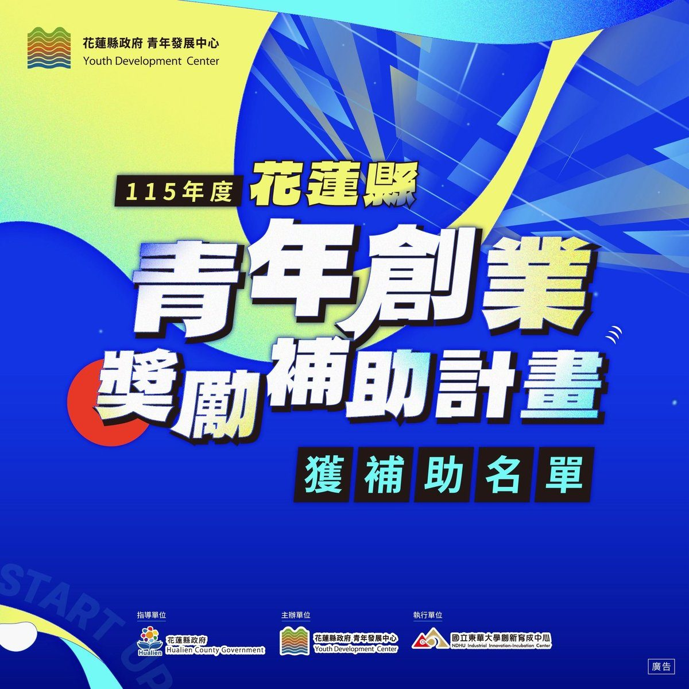

花蓮青創補助名單出爐 30組團隊獲縣府資源扎根在地

可樂電子報小編/編輯
為支持青年留鄉、返鄉及移居在地扎根發展，花蓮縣政府辦理「115年度花蓮縣青年創業獎勵補助計畫」，經公開徵件及產官學專家委員嚴謹審查後，審查結果於日前正式出爐。本年度共有30組青年創業團隊脫穎而出，涵蓋文化創意、特色餐飲、觀光體驗、農業加值、數位應用、健康促進及綠能科技等多元領域，展現花蓮青年將在地風土文化融入創新思維的豐沛創業動能。

縣府青年發展中心表示，本計畫依創業發展階段區分為「新創設立組」及「創業發展組」，透過實質創業補助資金、專業培力輔導及跨域資源鏈結，協助創業者降低初期門檻並健全營運體質。本屆審查競爭相當激烈，獲選團隊在商業模式成熟度、在地特色連結度及永續營運潛力上皆展現出色表現，為花蓮產業注入嶄新的跨界活力。
本年度「創業發展組」共計15組團隊通過審查，項目涵蓋智慧農企、工藝研發、綠能科技與深度餐桌體驗等。獲選團隊包括深入部落植物療癒的「共生植宴」、結合無人機空拍測繪的工程能量升級計畫、運用在地原料開發的「花東米甘露」、綠智鏈農企業數位服務、超微型水力發電機組研發，以及「蜜嶼洄味」特色蜂蜜拓展計畫等，展現出高度技術成熟與市場開拓潛力。
在扶持起步階段的「新創設立組」方面，同樣有15組亮眼團隊入選，囊括空調服務數位平台、青年音樂文化製作、染境工藝工作室、石材加工數位製造升級，以及銀髮健身與山海療癒體驗等創新服務。青年團隊透過數位科技與體驗設計賦予傳統工藝與地方產業全新風貌，不僅滿足在地生活多元需求，也開創出深具花蓮識別度的永續商業模式。
花蓮縣長徐榛蔚強調，青年是引領地方創新轉型與永續發展的關鍵力量，縣府將持續透過花蓮新創基地整合創業課程、業師陪伴及市場媒合等完整孵育機制，打造最溫暖且具韌性的創業支持網絡。完整獲選團隊名單與各項青年培力資源已正式公告於花蓮縣政府青年發展中心官網，歡迎各界青年攜手在花蓮實踐創業夢想。